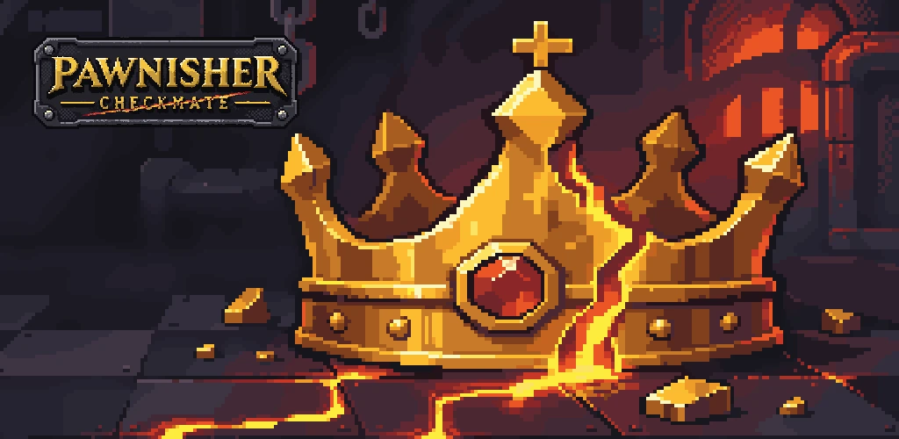
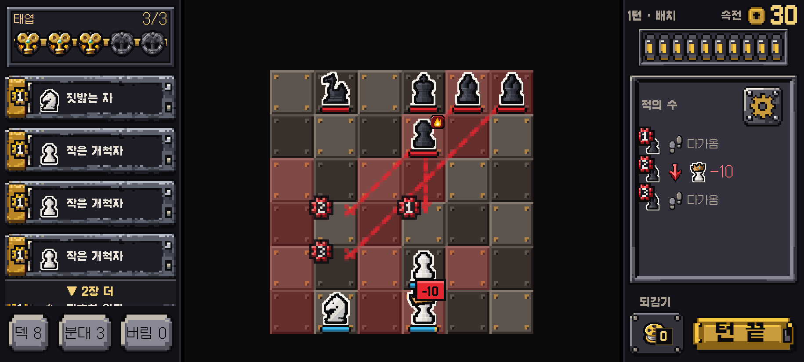
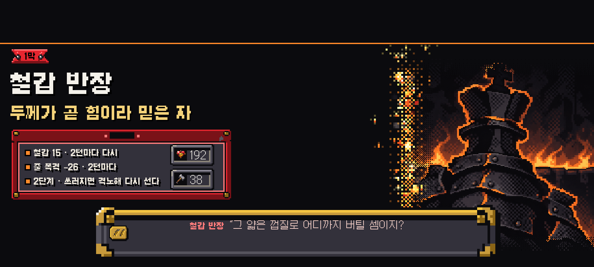
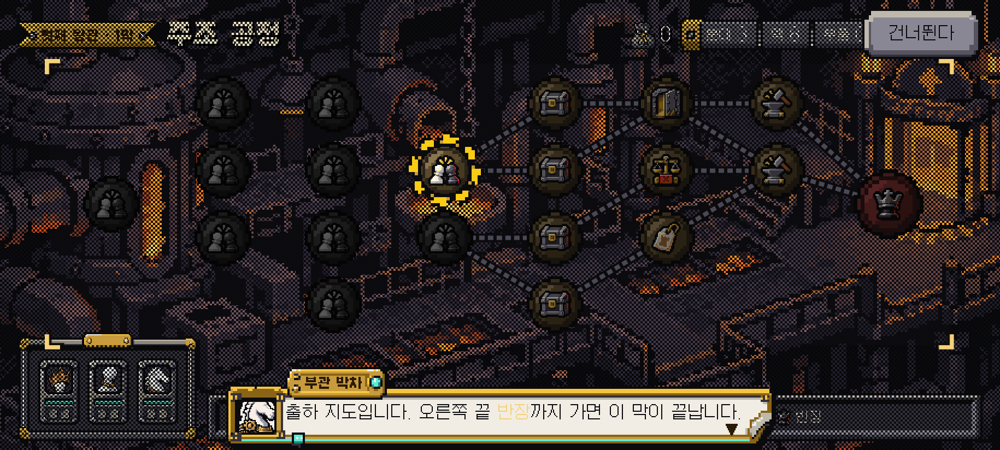
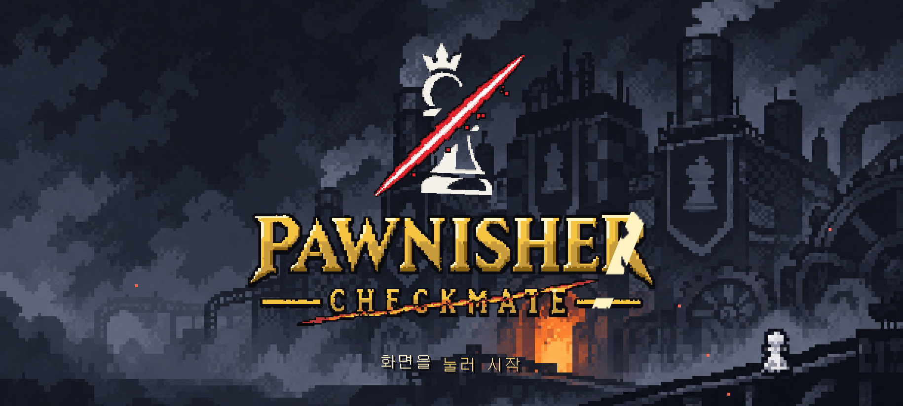

Pawnisher : Checkmate
왕관을 쓰면 동료가 녹는다. 체스 기물 분대를 이끌고 주물 공장 꼭대기로 오르는 어두운 로그라이크.




체스 기물을 찍어 내는 주물 공장. 대국에서 진 세트는 상자째 용광로로 쏟아진다. 킹 없이 찍혀 나온 불량 세트의 아홉째 폰이 종이 왕관을 접어 쓰고, 꼭대기의 승급대에 오르면 세트 전체가 정품으로 출하된다는 소문을 믿고 오른다.
돌아오지 않는 분대
분대원마다 이름과 흉터, 처치 기록이 있다. 다시 쓰러지면 폐기 원부에 이름만 남는다.
죽이지 않는 반장
층을 막는 반장들은 한때 분대를 모두 잃은 정품 킹이었다. 쓰러뜨려도 살려 두고, 그들은 등 뒤에 예언을 던진다.
왕관과 배신
꼭대기에는 금칠한 가짜 왕과, 왕관을 쓴 순간 켜지는 주조기가 있다. 첫째부터 넷째 왕관까지, 앞선 왕관의 흔적을 마주한 끝에야 왕관을 던질 수 있다.
체스 행마로 싸우는 명령 카드
폰은 대각선으로 치고, 나이트는 뛰어넘는다. 결과는 누르기 전에 판 위에 보이고, 같은 수는 늘 같은 결과를 낸다.
조용한 게임
광고와 게임 안 결제가 없고, 인터넷 없이 플레이해요. 개인정보를 모으지 않아요.
안드로이드 출시 준비 중 · 가로 화면 · 한국어 · 개인정보처리방침
Pawnisher : Checkmate
Wear the crown and your comrades melt. A dark roguelike about leading a squad of chess pieces to the top of a foundry.
In a foundry that casts chess pieces, any set that loses its match is poured into the furnace. The ninth pawn of a defective set, cast without a king, folds a paper crown and climbs, trusting a rumor: reach the promotion dais at the top and the whole set ships as genuine.
A squad that does not come back
Every member has a name, scars and a kill record. Fall twice and only a name is left in the scrap ledger.
Bosses you do not kill
The foremen guarding each floor were genuine kings once. You beat them and let them live, and they curse your back with prophecy.
The crown, and the betrayal
At the top wait a false king painted gold and a casting machine that starts when the crown touches your head. Across four crowns, only after facing what came before can you throw it away.
Command cards that move like chess
Pawns strike diagonally, knights leap. The board shows the outcome before you commit, and the same move always gives the same result.
Quiet by design
No ads, no in-app purchases, plays offline, collects no personal data.
Coming to Android · landscape · text in Korean · Privacy policy